Four directions for a new look, each on the same three screens: the home map, a route preview (Cyberjaya → Suria KLCC, real route and real RM 8.70 toll) and turn-by-turn navigation. The maps underneath are real, recoloured for each direction. Pick one, or mix parts, e.g. one direction's mascot with another's colours.
Soft pastel, no outlines, pillowy shadows, everything round. Calm and friendly, like a stationery shop. The mascot is Mochi, a rice cake with a leaf that points the way.
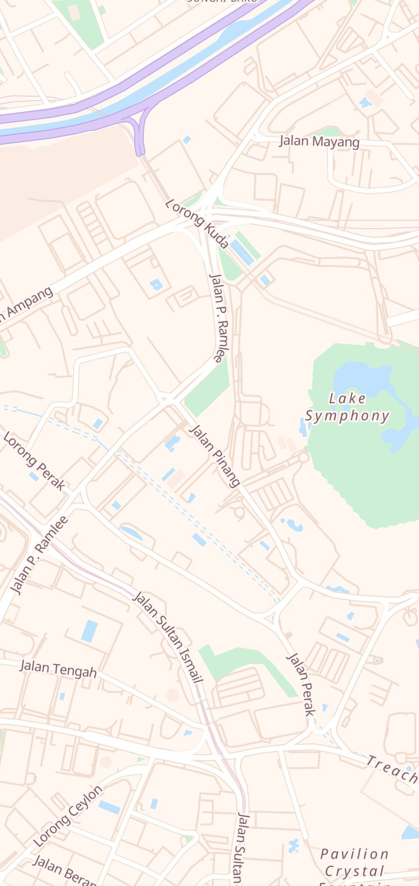
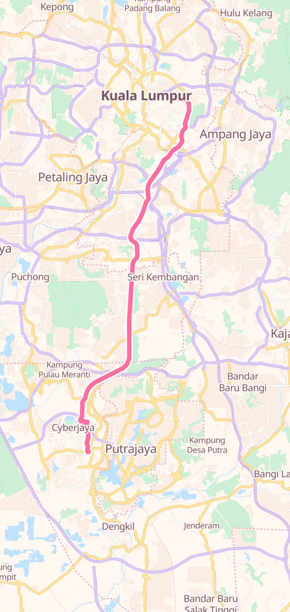
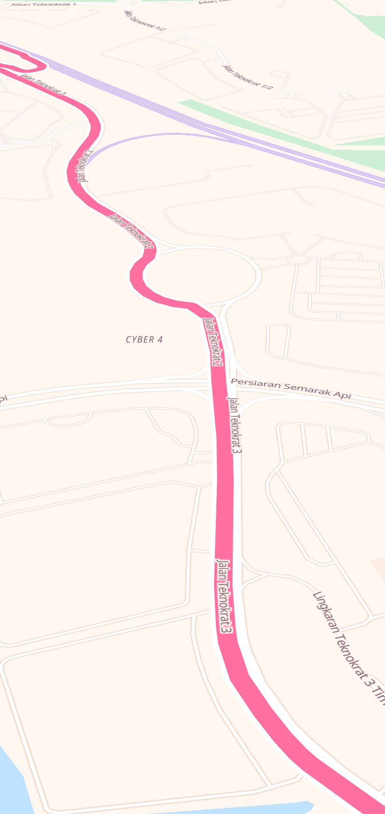
Feels: gentle and calming. Watch out: pastel pink on white is low-contrast, so instructions and distances keep a strong dark ink and the turn banner stays a saturated pink.
Bold and playful: thick dark outlines, hard offset shadows, bright flat colours, like stickers on a notebook. The mascot is Vroomie, a little purple car.
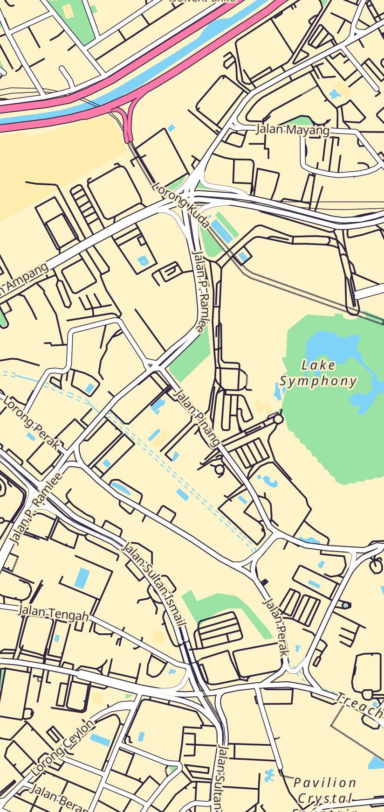
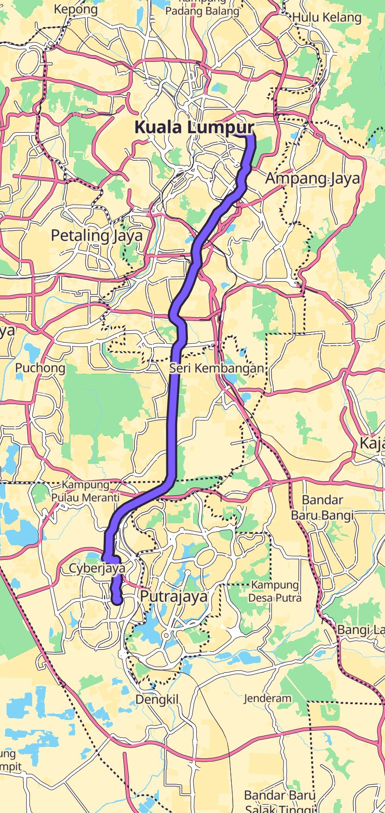
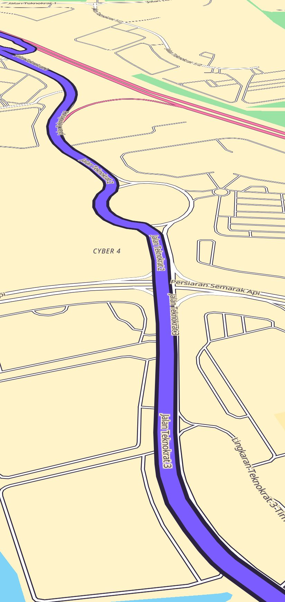
Feels: energetic and fun, the cutest of the four at a glance. Watch out: busier to look at for long drives; the outlines would be thinner on the map itself than in these cards.
Cute and Malaysian: pandan green, santan cream, kuih-coloured accents, and Sang Kancil, the clever mousedeer from our folk tales, who always finds a way out. Warm, local, and a mascot with a story.
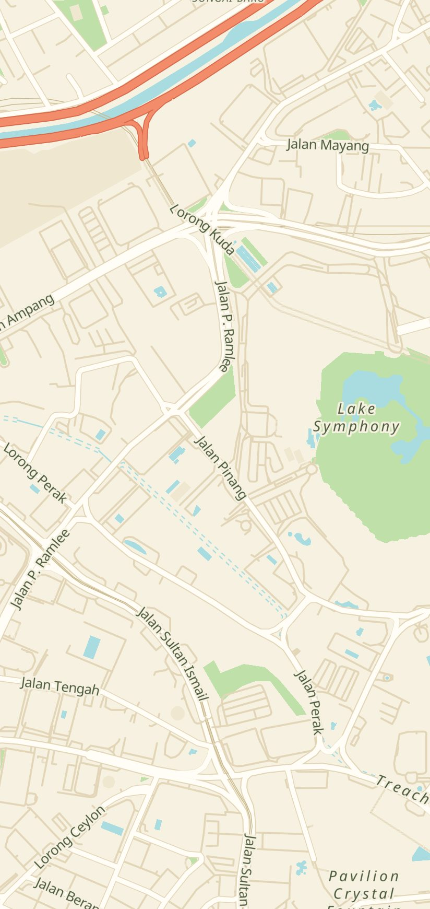
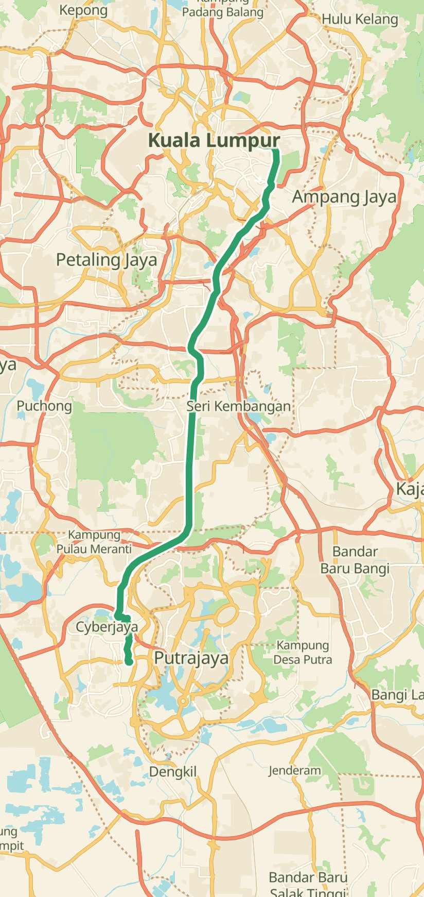
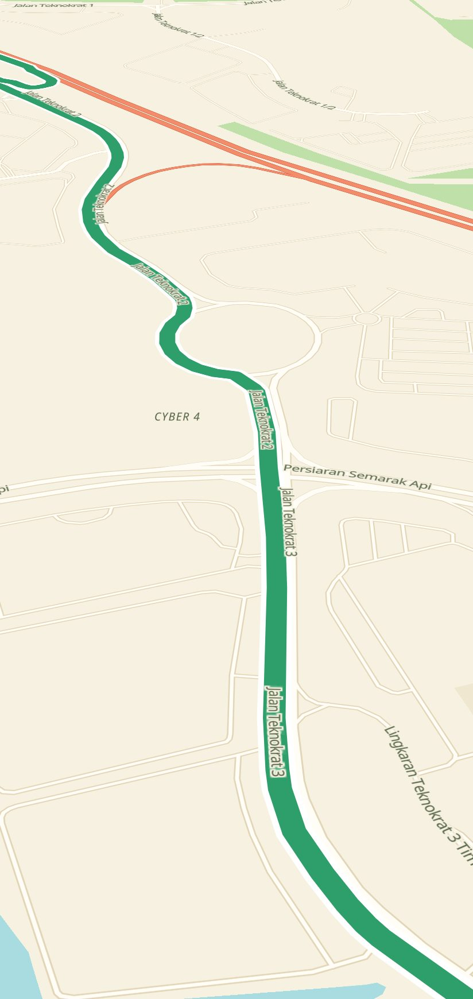
Feels: homegrown and warm; the kancil gives Arah a personality no foreign app has. My pick if Arah should feel Malaysian. The cream map is easy on the eyes and keeps strong contrast for the route.
The cute dark mode: deep lavender night, soft mint and pink, rounded everything. Made for evening drives, and it can be the night half of any of the three above. The mascot is Bulan, a sleepy moon.
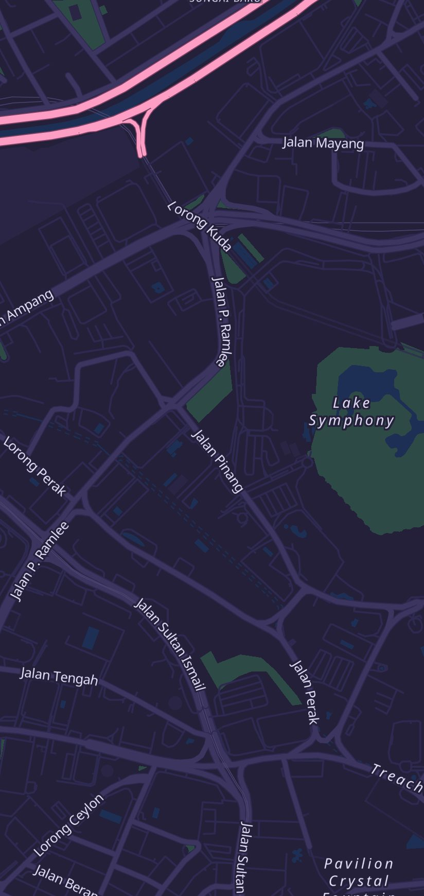
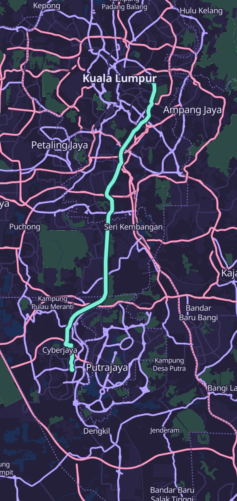
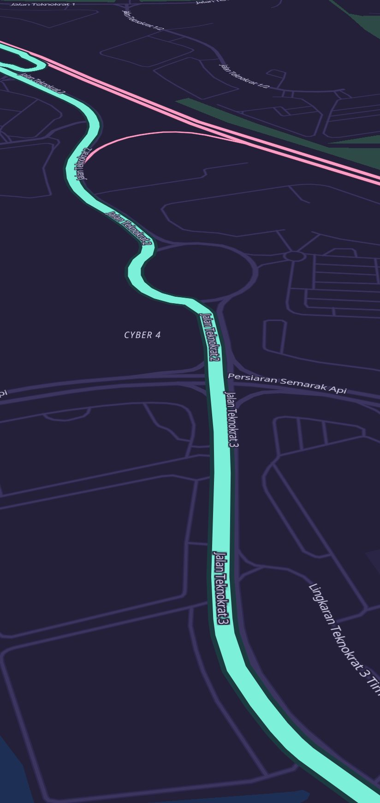
Feels: cosy and calm at night. Idea: pair it with Mochi or Pandan Kancil so the app is pastel by day and Marshmallow by night, switching on its own like the current Auto theme.
The whole interface: colours, rounded font (bundled in the app, so it works offline), button and card shapes, a recoloured map for the light and dark themes, new map icons, the mascot as your location marker and in the camera warnings, and a friendlier tone in the text and voice. Safety parts stay serious: turn instructions, distances and speed limits keep strong contrast and large type.